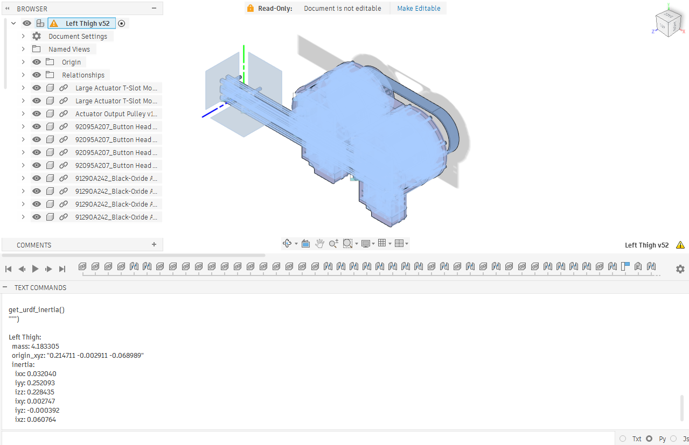
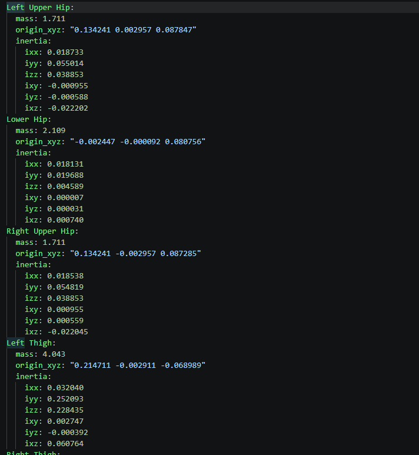
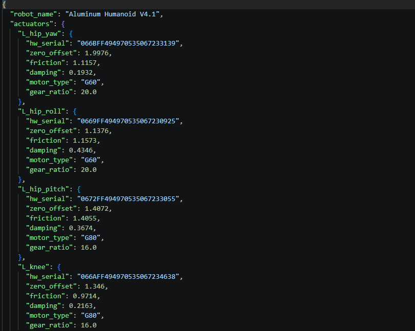
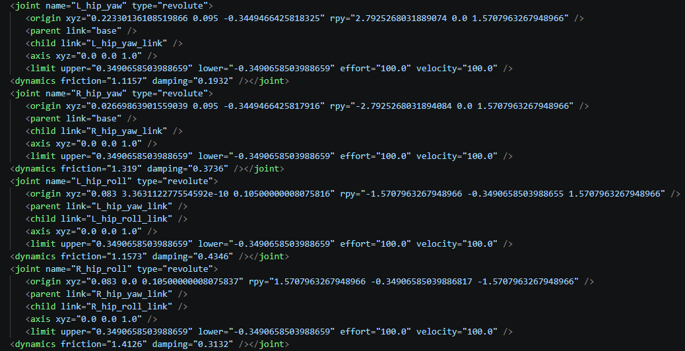
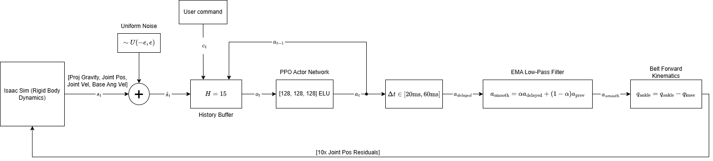
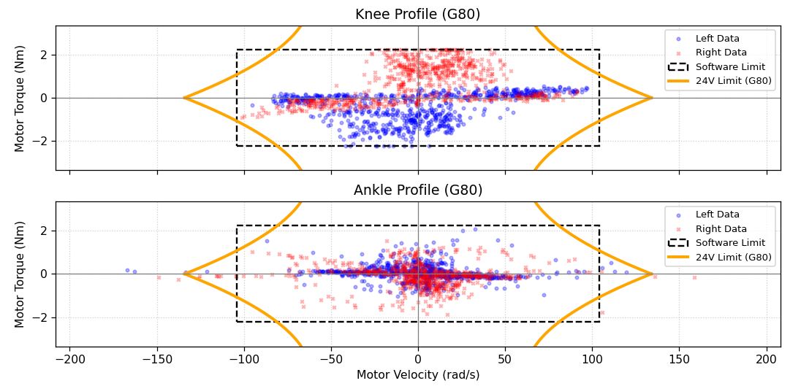

Semi-Automated CAD-to-SIM Pipeline
True Inertial Extraction
Standard URDF exporters often approximate mass and inertia using simple bounding boxes. Because
distal inertia is so critical to bipedal locomotion, exact values were required. A hybrid approach
was utilized to guarantee absolute physical accuracy: the mass of every individual link was manually
weighed on a precision scale down to the gram. Meanwhile, the complex Center of Mass (CoM)
coordinates and Inertia Tensors were extracted directly from the CAD model using a custom
Fusion 360 Python API script. A subsequent script (inject_accurate_inertial_values.py)
merges these physical weights with the CAD coordinates, handling all necessary coordinate
transformations, and injects them seamlessly into the URDF's <inertial> tags.


Friction Mapping
To accurately simulate motor effort, the Isaac Lab physics engine needs the exact static breakaway
friction and kinetic damping of the custom cycloidal gearboxes. Rather than guessing these values,
the robot utilizes a specialized calibration firmware that physically tests and extracts these
parameters from the real actuators. These hardware measurements are stored in a centralized
configuration file (biped_actuator_config.json). The inject_friction.py
script then automatically populates the URDF <dynamics> tags with these
real-world coefficients, ensuring the simulation's torque requirements perfectly match the physical
robot.


Modeling the Dual-Stage Belt Transmission
The centralization of the ankle mass via a dual-stage belt introduces complex coupled dynamics: the physical ankle actuator must counteract friction from the entire belt routing, while the knee actuator does not. The friction injection script programmatically splits the measured drag of the belt system, allocating 60% of the belt's friction to the knee joint and 40% to the ankle joint within the URDF, preventing Isaac Lab from doubling the mechanical resistance.
2. Reinforcement Learning & Training Environment
The locomotion policy was trained using Proximal Policy Optimization (PPO) via the
rsl_rl library within Isaac Lab. Rather than relying on massive, overly-complex neural
networks, the architecture prioritizes a highly accurate physics environment and a lean
[128, 128, 128] ELU Actor-Critic network. The simulation runs 4096 parallel
environments at a 200Hz physics step, decimated by a factor of 4 to match the robot's physical 50Hz
policy execution rate.
Domain Randomization
To ensure zero-shot transfer, the neural network was explicitly forbidden from trusting instantaneous, perfect simulation data. An aggressive Domain Randomization curriculum was implemented to simulate real-world hardware degradation:
- Observation Noise & History: Uniform noise is injected directly into all simulated IMU and encoder readings. Because instantaneous data is corrupt, the policy relies on a flattened 15-frame history buffer to implicitly deduce true state trends over a 300ms window.
- Dynamic USB Latency Simulation: A custom
DelayBufferrandomizes the latency of the policy's actions between 1 and 3 control steps (20ms to 60ms) dynamically. This forces the network to learn proactive, predictive stepping rather than reactive thrashing. - Mechanical Variation: At startup, the Isaac Lab environment randomly scales the robot's mass (0.8x to 1.2x), shifts the Centers of Mass by up to 2cm, and scales joint friction (0.5x to 1.5x) and actuator stiffness.
The Action Wrapper: Latency & Smoothing
The custom BipedActuatorAction wrapper acts as the final middleware between the Neural
Network and the Isaac Lab physics engine. It performs two crucial tasks:
- Applies the randomized 20-60ms latency.
- Applies an Exponential Moving Average (EMA) filter (
alpha = 0.3) to the actions, damping high-frequency twitches that would otherwise destroy the physical gearboxes.
def process_actions(self, actions: torch.Tensor):
# 1. Latency: Shift buffer and insert new action
self.delay_buffer[:, 1:] = self.delay_buffer[:, :-1].clone()
self.delay_buffer[:, 0] = actions
# 2. Extract action based on each robot's specific random lag
env_indices = torch.arange(self._env.num_envs, device=self.device)
delayed_actions = self.delay_buffer[env_indices, self.latency_indices]
# 3. Smoothing: Apply Exponential Moving Average
self.smoothed_actions = (self.alpha * delayed_actions) + (
(1.0 - self.alpha) * self.smoothed_actions
)
# 4. Standard Processing (scaling/offsets)
super().process_actions(self.smoothed_actions)
Reward Shaping
The baseline reward structure was heavily inspired by classic Cassie flat-ground environments. However, significant custom reward shaping was engineered to protect the physical hardware limits:
- Gait Symmetry: A custom
feet_air_time_symmetrypenalty (weight: -8.0) tracks the delta between the left and right foot air times, aggressively penalizing limping behaviors.
def reward_feet_air_time_symmetry(env, sensor_cfg: SceneEntityCfg) -> torch.Tensor:
contact_sensor = env.scene.sensors[sensor_cfg.name]
air_time_subset = contact_sensor.data.last_air_time[:, sensor_cfg.body_ids]
air_time_l = air_time_subset[:, 0]
air_time_r = air_time_subset[:, 1]
return torch.abs(air_time_l - air_time_r)penalty_motor_envelope_violation calculates the dynamic
velocity limit of the motors based on their current torque output. By mapping the exact
polynomial curves of the G60 and G80 motors, the network is harshly penalized (weight: -1.0e-3)
if it commands a velocity that exceeds the physical stall-torque boundary of the real actuators.

def penalty_motor_envelope_violation(env, asset_cfg: SceneEntityCfg) -> torch.Tensor:
asset = env.scene[asset_cfg.name]
# 1. Initialize mapping tensors on the GPU once (Caching for performance)
if not hasattr(env, "_motor_specs_initialized"):
joint_names = asset.data.joint_names
num_joints = len(joint_names)
gr = torch.zeros(num_joints, device=env.device)
poly_a = torch.zeros(num_joints, device=env.device)
poly_b = torch.zeros(num_joints, device=env.device)
poly_c = torch.zeros(num_joints, device=env.device)
# Map Gear Ratios and Polynomials based on analyzer specs
for i, name in enumerate(joint_names):
if "yaw" in name or "roll" in name:
gr[i] = 20.0
poly_a[i], poly_b[i], poly_c[i] = 9.09, -55.05, 117.81 # G60
else:
gr[i] = 16.0
poly_a[i], poly_b[i], poly_c[i] = 3.46, -31.56, 134.04 # G80
env._motor_gr = gr
env._motor_a = poly_a
env._motor_b = poly_b
env._motor_c = poly_c
env._motor_specs_initialized = True
# 2. Extract state and convert from Joint Space to Bare Motor Space
tau_j = torch.abs(asset.data.applied_torque)
vel_j = torch.abs(asset.data.joint_vel)
tau_m = tau_j / env._motor_gr
vel_m = vel_j * env._motor_gr
# 3. Calculate dynamic velocity limit based on current torque
# omega_limit = a*(tau_m^2) + b*(tau_m) + c
vel_limit = (env._motor_a * (tau_m**2)) + (env._motor_b * tau_m) + env._motor_c
# If the limit is negative (torque is so high the motor stalls), any velocity is a violation
vel_limit = torch.clamp(vel_limit, min=0.0)
# 4. Calculate violation (excess velocity beyond the polynomial boundary)
excess_vel = torch.clamp(vel_m - vel_limit, min=0.0)
# 5. Sum the violations across all joints, squared to create a harsh penalty wall
return torch.sum(excess_vel**2, dim=1)track_foot_clearance
reward (weight: 5.0) continuously tracks the 3D position of the foot's lowest corner during the
swing phase. Upon touchdown, it evaluates the step retrospectively, applying a sparse reward
that linearly targets a maximum apex height of 0.08m. This guarantees enough clearance to
prevent toe-stubbing on physical hardware without wasting energy on excessively high steps.def reward_retrospective_max_clearance(
env,
asset_cfg: SceneEntityCfg,
sensor_cfg: SceneEntityCfg,
target_height: float,
x_offset: float = 0.066, # Distance from ankle origin to sole
y_toe: float = 0.094, # Distance from ankle origin to front of foot
y_heel: float = 0.056, # Distance from ankle origin to back of foot
) -> torch.Tensor:
"""
Event-Driven Sparse Reward with Asymmetric Virtual Proxy Points.
Tracks the lowest point of a 2-point line (toe and heel) for each foot.
Automatically scales so that a max height of 0.0 (ground) results in 0.0 reward.
"""
num_envs = env.num_envs
# 1. Initialize persistent buffers
if not hasattr(env, "max_foot_z"):
env.max_foot_z = torch.zeros((num_envs, 2), device=env.device)
env.last_contact = torch.ones(
(num_envs, 2), dtype=torch.bool, device=env.device
)
# 2. Get Ankle Positions, Orientations, and Contact Forces
ankle_pos = env.scene[asset_cfg.name].data.body_pos_w[:, asset_cfg.body_ids]
ankle_quat = env.scene[asset_cfg.name].data.body_quat_w[:, asset_cfg.body_ids]
contact_forces = env.scene[sensor_cfg.name].data.net_forces_w[
:, sensor_cfg.body_ids, 2
]
current_contact = contact_forces > 1.0
# 3. Define the 2-point line (Toe, Heel) for each foot individually
# Left foot: Y-axis is flipped (Toe is -y, Heel is +y)
points_local_l = torch.tensor(
[
[x_offset, -y_toe, 0.0],
[x_offset, y_heel, 0.0],
],
device=env.device,
dtype=torch.float32,
)
# Right foot: Standard orientation (Toe is +y, Heel is -y)
points_local_r = torch.tensor(
[
[x_offset, y_toe, 0.0],
[x_offset, -y_heel, 0.0],
],
device=env.device,
dtype=torch.float32,
)
def get_lowest_point_z(pos, quat, local_points):
lowest_z = torch.full((num_envs,), float("inf"), device=env.device)
for i in range(2): # Only evaluating 2 points now
point_vec = local_points[i].unsqueeze(0).expand(num_envs, 3)
rotated_point = quat_apply(quat, point_vec)
world_point = pos + rotated_point
lowest_z = torch.minimum(lowest_z, world_point[:, 2])
return lowest_z
# Pass the specific Left/Right local point tensors into the calculator
lowest_z_l = get_lowest_point_z(
ankle_pos[:, 0, :], ankle_quat[:, 0, :], points_local_l
)
lowest_z_r = get_lowest_point_z(
ankle_pos[:, 1, :], ankle_quat[:, 1, :], points_local_r
)
lowest_foot_z = torch.stack([lowest_z_l, lowest_z_r], dim=1)
# 4. Update Max Z buffer
in_air = ~current_contact
env.max_foot_z = torch.where(
in_air, torch.maximum(env.max_foot_z, lowest_foot_z), env.max_foot_z
)
# 5. Detect Touchdown Event
touchdown = (~env.last_contact) & current_contact
# 6. Calculate Linear Error
error_l = torch.abs(env.max_foot_z[:, 0] - target_height)
error_r = torch.abs(env.max_foot_z[:, 1] - target_height)
# 7. Apply Dynamic Scaling
raw_reward_l = torch.clamp(1.0 - (error_l / target_height), min=0.0)
raw_reward_r = torch.clamp(1.0 - (error_r / target_height), min=0.0)
reward_l = raw_reward_l * touchdown[:, 0].float()
reward_r = raw_reward_r * touchdown[:, 1].float()
# 8. Reset the maximum tracker
env.max_foot_z = torch.where(
touchdown, torch.zeros_like(env.max_foot_z), env.max_foot_z
)
# 9. Save current contact state
env.last_contact = current_contact
return reward_l + reward_r